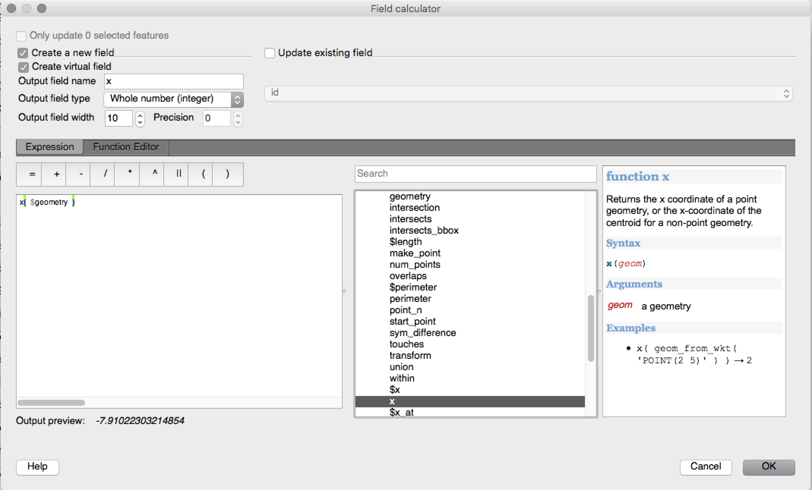
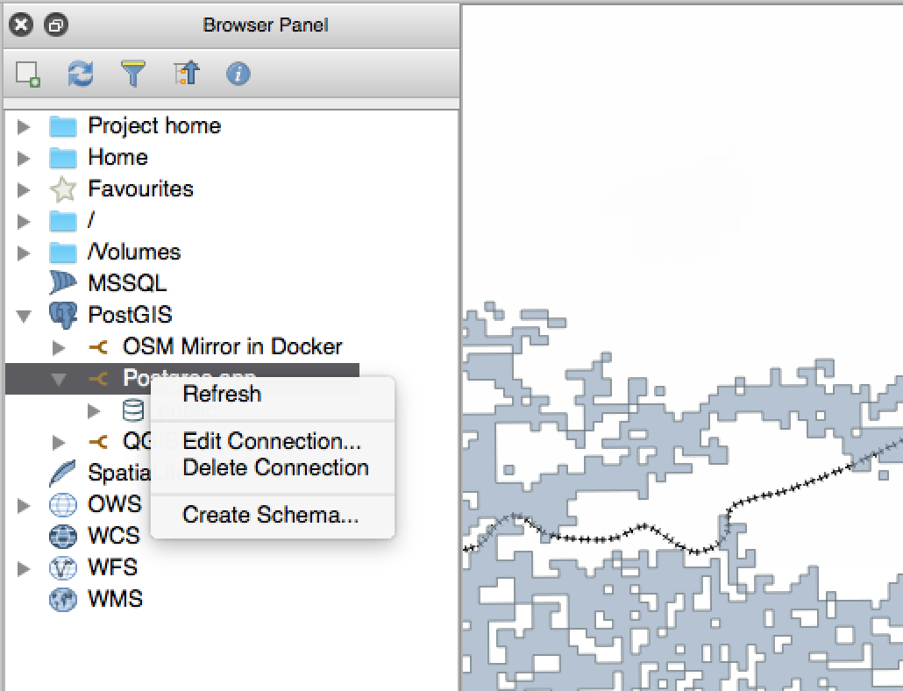
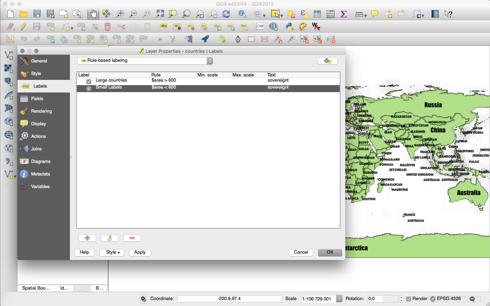

QGIS 2.12 pakeitimai¶

Tai kitos QGIS versijos - 2.12.0 „Lyon“ pakeitimai. Lyone 2012 metų balandžio mėnesį buvo rengiamas mūsų vystymo susitikimas.
Naujos QGIS 2.12 „Lyon“ savybės
Tai eilinė laida, išleidžiama kas 4 mėnesius. Ji duoda jums prieigą prie naujausių mūsų kuriamų funkcijų ir rodo QGIS vystymo pačius paskutinius pasiekimus.
QGIS „Lyon“ pilna puikių naujų savybių. Ypatingai pastebimas naujai įdiegtos nuo taisyklių priklausančios etiketės, nuo taisyklių priklausantys atributų lentelių stiliai ir sudėtingesnis geometrijos tikrinimas, kreivinių geometrijų skaitmeninimas, geresnis autentikacijos valdymas ir daug daug kitų naujienų! QGIS 2.12 buvo ištaisyta daug riktų ir atminties naudojimo klaidų. QGIS 2.12 savybės bus įtrauktos į kitą LTR laidą (kurią planuojama išleisti 2016), taigi naudodami šią laidą jūs turite puikią galimybę išbandyti naujas savybes, kurios atsidurs kitoje LTR.
Į programinę įrangą pridėjus naujų savybių, atsiranda ir naujų klaidų tikimybė - jei pastebėsite šios laidos problemų, prašome apie jas pranešti QGIS klaidų registravimo sistemoje. Jei dirbate gamybinėje aplinkoje, kur norite konservatyviau žiūrėti į naujo funkcionalumo diegimą naudotojams, mes taipogi teikiame ir ilgalaikę (LTR) QGIS laidą. Dabartinė LTR versija yra 2.8.3, ją rasite download.qgis.org.
Padėkos
Norime padėkoti programuotojams, dokumentuotojams, testuotojams ir dar būriui kitų žmonių, kurie savo noru aukojo savo laiką ir pastangas (arba finansavo tuo užsiimančius žmones).
From the QGIS community we hope you enjoy this release! If you wish to donate time, money or otherwise get involved in making QGIS more awesome, please wander along to qgis.org and lend a hand!
Na ir pagaliau norėtume padėkoti savo rėmėjams už neįkainojamą finansinę paramą šiam projektui:
- AUKSINIS rėmėjas: Asia Air Survey, Japonija
- SIDABRINIS rėmėjas: AGH Mokslo ir technologijos universitetas, Krokuva, Lenkija
- SIDABRINIS rėmėjas: State of Vorarlberg, Austrija
- SIDABRINIS rėmėjas: Office of Public Works, Ireland, Airija
- SIDABRINIS rėmėjas: Sourcepole AG, Šveicarija
- BRONZINIS rėmėjas: Lutra Consulting, Jungtinė Karalystė
- BRONZINIS rėmėjas: WhereGroup GmbH & Co. KG, Vokietija
- BRONZINIS rėmėjas: Nicholas Pearson Associates, JK
- BRONZINIS rėmėjas: QGIS Poland, Lenkija
- BRONZINIS rėmėjas: www.terrelogiche.com, Italija
- BRONZINIS rėmėjas: GeoSynergy, Australija
- BRONZINIS rėmėjas: Gaia3D, Pietų Korėja
- BRONZINIS rėmėjas: Royal Borough of Windsor and Maidenhead, JK
- BRONZINIS rėmėjas: Chartwell Consultants Ltd, Kanada
- BRONZINIS rėmėjas: Trage Wegen vzw, Belgija
- BRONZINIS rėmėjas: GFI - Gesellschaft fr Informations technologie mbH, Vokietija
- BRONZINIS Sponsorius: GKG Kassel,(Dr.-Ing. Claas Leiner), Vokietija
- BRONZINIS rėmėjas: GIS-Support, Lenkija
- BRONZINIS rėmėjas: ADLARES GmbH, Vokietija
- BRONZINIS rėmėjas: www.molitec.it, Italija
- BRONZINIS rėmėjas: www.argusoft.de, Vokietija
- BRONZINIS rėmėjas: Customer Analytics, JAV
- BRONZINIS rėmėjas: Avioportolano Italia, Italija
- BRONZINIS rėmėjas: AGH, Mokslo ir technologijų universitetas, geologijos, geofizikos ir aplinkos apsaugos fakultetas, Lenkija
- BRONZINIS rėmėjas: Urbsol, Australija
- BRONZINIS rėmėjas: MappingGIS, Ispanija
- BRONZINIS rėmėjas: GIS3W, Italija
A current list of donors who have made financial contributions large and small to the project can be seen on our donors list. If you would like to become and official project sponsor, please visit our sponsorship page for details. Sponsoring QGIS helps us to fund our six monthly developer meetings, maintain project infrastructure and fund bug fixing efforts.
QGIS yra atvira programinė įranga ir jums jokiu būdu neprivalu mokėti norint ją naudoti. Priešingai, mes norime skatinti kiek galima daugiau žmonių naudoti ją nepriklausomai nuo jūsų finansinio ar visuomeninio statuso - mes tikime, kad duodant žmonėms įrankius, teikiančius galimybę daryti erdvinius sprendimus, galima sukurti geresnę visos žmonijos visuomenę.
- Bendra
- Savybė: naujas pasveikinimo ekranas
- Savybė: pastovus kodo kokybės gerinimas
- Savybė: sudėtingesnis nustatymų redaktorius
- Savybė: vienas kitą išjungiančių sluoksnių medžio grupė
- Savybė: lauko reikšmių filtravimas išraiškos valdiklyje
- Savybė: Naudotojo sąsajos temų palaikymas
- Savybė: Naujos 2.12 išraiškų funkcijos
- Savybė: kintamieji išraiškose
- Analizės įrankiai
- Programos ir projekto parinktys
- Naršyklė
- Duomenų tiekėjai
- Duomenų valdymas
- Skaitmeninimas
- Etiketės
- Savybė: nuo duomenų priklausantis kvadrantas „aplink tašką“ režime
- Savybė: braižyti tik tas etiketes, kurios telpa poligonų viduje
- Savybė: etikečių kliūčių prioriteto kontrolė
- Savybė: naujos parinktys, kontroliuojančios kaip poligonų sluoksniai veikia kaip kliūtys
- Savybė: nuo duomenų priklausanti etikečių prioriteto kontrolė
- Savybė: tik-kliūčių sluoksnio parinktis
- Savybė: nuo taisyklių priklausančios etiketės
- Žemėlapio maketas
- Savybė: atlaso navigacijos patobulinimai
- Savybė: savas tinklelių anotacijų formatas
- Savybė: kelių eilučių tekstas ir automatinis teksto perkėlimas maketo atributų lentelėse
- Savybė: sudėtingesnis langelio fono spalvos tinkinimas
- Savybė: pridėtos parinktys talpinti puslapį į turinį ir apkarpyti eksportą pagal turinį
- Savybė: vektorinius sluoksnius priverstinai braižyti kaip rastrą
- Savybė: nuo duomenų priklausanti žemėlapio sluoksnių ir stilių kontrolė
- Savybė: galimybė slėpti puslapius rodyme/eksportavime
- Priedai
- Programavimas
- QGIS Serveris
- Simbologija
- Savybė: miniatiūrų eksportavimas iš stilių tvarkyklės
- Savybė: nauja parinktis riboti dydį milimetrais, kai naudojami žemėlapio vienetų dydžiai
- Savybė: pastumto braižymo patobulinimai
- Savybė: dabar galima redaguoti visas spalvų rampas
- Savybė: SVG žymeklių rėmų tvarkymo patobulinimai
- Savybė: pridėti taškus kaip vieną iš simbologijos dydžio nurodymo vienetų
Bendra¶
Savybė: naujas pasveikinimo ekranas¶
Vietoje to, kad rodytų tuščią baltą drobę, QGIS dabar rodys paskutinių projektų sąrašą su nedidelėmis iliustracijomis, kad būtų galima greitai ir paprastai grįžti į jūsų paskutinę darbo sesiją.
Šią savybę sukūrė: Matthias Kuhn at OPENGIS.ch

Savybė: pastovus kodo kokybės gerinimas¶
Naudojant adresavimo tvarkymo biblioteką buvo rasti ir pataisyti šimtai atminties nutekėjimų. Periodiškai naudojant automatinius Coverity Scan kodo skenavimus buvo ieškoma potencialių problemų, šiuo metu mūsų Coverity defektų tankis yra įspūdingai žemas - tik 0,02 defektai 1000 kodo eilučių. Automatinių testų biblioteka buvo stipriai padidinta kuriant 2.12 versiją, taigi dabar regresijos identifikuojamos ir pataisomos nedelsiant. 2.12 mes taipogi pridėjome pastovų testavimą OSX, kad kiekvienas kodo pakeitimas būtų tikrinamas testais tiek Linux, tiek ir OSX platformose.

Savybė: sudėtingesnis nustatymų redaktorius¶
Į nustatymų dialogą pridėtas skydelis, kuriame galite keisti bet kurią jūsų profilyje jau apibrėžtą parinktį. Tai skirta tik patyrusiems naudotojams, nes QGIS gali pradėti veikti neaiškiai, jei pakeisite vieną iš nustatymų nesuprasdami, ką darote.
Šią savybę sukūrė: Matthias Kuhn at OpenGIS

Savybė: vienas kitą išjungiančių sluoksnių medžio grupė¶
Su šia savybe jūs galite sukurti sluoksnių grupę, kurioje tik vienas sluoksnis iš grupės gali būti rodomas konkrečiu metu. Šią savybę per kontekstinį meniu galima įjungti konkrečiai grupei sluoksnių medyje.
Šią savybę sukūrė: Martin Dobias iš Lutra Consulting pagal subrangos sutartį su Gis3W
Šią savybę finansavo: Tuscany Regionas (Italija) - SITA (CIG: 63526840AE)

Savybė: lauko reikšmių filtravimas išraiškos valdiklyje¶
Kuriant išraišką, kuri naudoja reikšmes iš lauko, jūs dabar galite filtruoti lauko reikšmes peržiūros skydelyje.
Šią savybę sukūrė: Salvatore Larosa

Savybė: Naudotojo sąsajos temų palaikymas¶
QGIS 2.12 palaiko naudotojo sąsajos temas, kurias galite naudoti lango fono, mygtukų ir pan. išvaizdos tinkinimui. Pagal nutylėjimą mes teikiame dvi temas: Numatytoji ir Naktinis žymėjimas. Antroji yra tamsi tema, ji patinka žmonėms, kurių akis vargina šviesios temos.
Daugiau apie temų palaikymą sužinosite perskaitę Nathan Woodrow dienoraščio straipsnį.
Šią savybę sukūrė: Nathan Woodrow

Savybė: Naujos 2.12 išraiškų funkcijos¶
Buvo pridėtos kelios netikslaus atitikimo funkcijos. Tai funkcijos, skirtos rasti dviejų eilučių panašumus ir taip pat daryti fonetinio eilučių panašumo skaičiavimus, o tai leidžia vykdyti filtrus tokiems įrašams, kurie „daugmaž atitinka“ nurodytą eilutę.
Buvo pridėta daugiau geometrijos funkcijų, tame tarpe:
num_points(geom)geometrijos taškų skaičiavimuiarea(geom),length(geom)irperimeter(geom), bet kokio objekto geometrijos ploto, ilgio ir perimetro skaičiavimui. Anksčiau buvo galima skaičiuoti plotą, ilgį ir perimetrą tik dabartinio objekto geometrijai.start_point(geom),end_point(geom),point_n(geom, n), geometrijos pirmam, paskutiniam ir konkrečiam taškui gautimake_point(x,y), rankiniam taško geometrijos sukūrimuix(geom),y(geom)taško geometrijos x ir y koordinačių gavimui ir centroido x/y ne taško geometrijoms
Buvo pridėta nauja funkcija project_color, kuri leidžia gauti spalvą iš projekto spalvų schemos pagal jos pavadinimą. Tokiu būdu jūs galite kurti „susietas spalvas“, kur simboliai arba etiketės gali būti susietos su projekto spalvų schemos spalvomis. Pakeiskite spalvą schemoje ir visos susijusios spalvos automatiškai pasikeis!
Papildomai kelios labai naudingos išraiškos buvo atkeltos iš expressions+ priedo, įskaitant:
color_part: leidžia ištraukti konkretų spalvos komponentą (pvz. raudonumą, atspalvį ar permatomumą) iš spalvosset_color_part: leidžia keisti konkretų spalvos komponentą, pavyzdžiui keisti spalvos alfa (permatomumo) reikšmęday_of_week: grąžina savaitės dieną kaip skaičių iš datos
Taipogi kontekstinė išraiškos funkcijų pagalba buvo patobulinta geresniam skaitomumui.

Savybė: kintamieji išraiškose¶
Dabar galite apsibrėžti kintamuosius, kuriuos norite naudoti išraiškose. Kintamieji gali būti apibrėžti globaliame aplikacijos, projekto, sluoksnio arba maketo lygyje. Kaip ir CSS pakopinės taisyklės, kintamųjų reikšmės gali būti permušamos - pavyzdžiui projekto lygio kintamasis permuš bet kokius nustatytus aplikacijos lygio kintamuosius. Galite naudoti šiuos kintamuosius tekstinių eilučių ar savo išraiškų kūrimui. Pavyzdžiui maketo etiketės su tokiu turiniu:
Šis žemėlapis sukurtas naudojant QGIS [% @qgis_version %]. Žemėlapio projekto failas yra: [% @project_path %]
Sukurs tokį etiketės tekstą:
Šis žemėlapis sukurtas naudojant QGIS 2.12. Žemėlapio projekto failas yra: /gis/qgis-user-conference-2015.qgs
Globalius kintamuosius galite valdyti per meniu punktą Nustatymai -> Parinktys. Projekto lygio kintamuosius per Projekto savybės (įskaitant ir savų kintamųjų kūrimą).
Šią savybę sukūrė: Nyall Dawson

Analizės įrankiai¶
Savybė: Į išvestinių laukų sąrašą pridėtas viršūnių skaičius identifikavimo įrankyje¶
Panaudojus identifikavimo įrankį linijos geoobjektui, papildomuose išvestiniuose atributuose dabar bus rodomas ir viršūnių skaičius geoobjekte.
Savybė: Rastro lygiavimo įrankis¶
Šis naujas qgis_analysis bibliotekos įrankis gali priimti kelis rastrus kaip įvestį ir:
- perprojektuoti į tą patį CRS
- pertvarkyti į tokį patį celės dydį ir poslinkį tinklelyje
- apkarpyti pagal dominantį regioną
- prireikus pertvarkyti reikšmes
Šią savybę sukūrė: Martin Dobias iš Lutra Consulting pagal subrangos sutartį su Kartoza
Šią savybę finansavo: DFAT skirta projektui InaSAFE

Savybė: Geometrijos tikrinimo ir geometrijos pritraukimo priedai¶
Du nauji priedai (kuriuos jums reikės įjungti priedų tvarkyklėje) leidžia tikrinti ir taisyti geometrijas. Geometrijos Tikrinimo priedas (rodomas žemiau) jūsų vektoriniame duomenų rinkinyje ieškos skirtingų tipų sisteminių klaidų ir bandys jas už jus pataisyti. Pataisius klaidą, klaidų sąrašas automatiškai atnaujinamas, kad, pavyzdžiui, jei pataisius vieną klaidą išsprendžiamos kitos klaidos, visos klaidos būtų pašalinamos iš problemų sąrašo.
Su Geometrijos pritraukimo įrankiu jūs galite lygiuoti vieno vektorinio sluoksnio kraštus ir viršūnes su antro sluoksnio kraštais ir viršūnėmis, naudodami nurodytą toleranciją.
Šią savybę sukūrė: Sandro Mani iš Sourcepole AG
Šią savybę finansavo: Canton of Solothurn

Programos ir projekto parinktys¶
Savybė: užkoduoto slaptažodžio valdymas¶
QGIS 2.12 pridėta nauja atutentikavimo sistema (žr. PR 2330, QEP 14). Štai kas pridėta:
- Pagrindiniu slaptažodžiu užkoduotos autentikacijos nustatymai laikomi SQLite duomenų bazėje
- Autentikacijos metodo priedų architektūra (kaip duomenų tiekėjų)
- Basic auth metodo priedas
- Bazinio autentikavimo priedas integruotas su PostGIS ir OWS tiekėjų jungtimis
- Kartu su dabartiniu naudotojo/slaptažodžio nustatymu (vis dar pilnai veikia)
- SSL serverio jungties konfigūracija (įrašyti išimtis ar savas konfigūracijas SSL jungties klaidoms)
Susiję su PKI autentikacija:
- Importuoti papildomus Sertifikatų Autoritetus - CA, tarpiniai sertifikatų išdavėjai ir asmens identiteto paketai
- Sertifikatų komponentai valdomi kaip Firefox’e
- Autentikavimo metodų priedai PEM ir PKCS#12 paketams diske arba išsaugotiems asmeniniams identitetams
- Integruota su OWS tiekėjų jungtimis (PostGIS ir kitoms duomenų bazėms prireiks šiek tiek daugiau laiko, kad pradėtų veikti)
Bendrų projektų atvejams, įskaitant tinklinių diskų atvejams, jūs galite keisti autentikavimo konfigūracijos (authcfg) ID į kažką, ką turi visi naudotojai.
Kadangi authcfg ID įdėtas į projekto failą, kiekvienas naudotojas tik turi sukurti autentikacijos konfigūraciją, kurioje yra jų konkretūs to resurso prisijungimo duomenys. Tada pakeisti ID (konfigūracijos sukūrimo metu arba vėliau) į tą patį ID, kuris nurodytas projekto faile. Tada įkeliant resursą ta pati konfigūracija bus traukiama kiekvieno naudotojo QGIS, tik su jų asmeniniais duomenimis pasirinktam autentikavimo metodui.
Blogų sluoksnių valdymo dialoge naudotojai gali Pridėti/Keisti/Išimti autentikacijos konfigūracijas tiesiai iš dialogo ir taip atitinkamai pakeisti duomenų šaltinio URI. Taigi bendro projekto atveju naudotojas gali projekto įkėlimo metu nedelsiant pridėti reikiamą naują autentikacijos konfigūraciją (ir pamatyti koks konkrečiai bus naudojamas bendro authcfg ID).
Šiuo metu pagrindinio slaptažodžio automatinis nustatymas gali veikti per Python arba per savą C++ priedą nustatymų įkėlimo metu kviečiant QgsAuthManager::instance()->setMasterPassword( "mypassword", true ), arba aplinkos kintamajame QGIS_AUTH_PASSWORD_FILE nustačius kelią iki failo su pagrindiniu slaptažodžiu.
Pastaba: serveriui, taip pat galite naudoti QGIS_AUTH_DB_DIR_PATH, kad nurodytumėte kelią iki qgis-auth.db aplanko ir QGIS_AUTH_PASSWORD_FILE, kad nurodytumėte kelią iki failo su pagrindiniu slaptažodžiu serveryje.
PKI pavyzdžių dokumentai: https://github.com/dakcarto/QGIS-Enhancement-Proposals/blob/auth-system/extras/auth-system/pkiuser.rst
Šią savybę sukūrė: Larry Shaffer
Šią savybę finansavo: Boundless Spatial, Inc.

Naršyklė¶
Savybė: PostGIS jungčių naršyklėje patobulinimai¶
QGIS naršyklė dabar palaiko papildomą funkcionalumą PostGIS jungtims, įskaitant galimybę kurti, pervadinti ir trinti schemas, sluoksnių pervadinimo ir kapojimo galimybę ir lentelių kopijavimą iš vienos schemos į kitą.
Šią savybę sukūrė: Nyall Dawson
Lentelių kopijavimą sukūrė: Jürgen Fischer iš norBIT GmbH

Duomenų tiekėjai¶
Savybė: PostGIS tiekėjo patobulinimai¶
Padaryti šie PostGIS tiekėjo patobulinimai:
- PostGIS sluoksnių taisyklėmis paremto braižymo greitaveikos patobulinimai
- pridėtas sudėtinių raktų rodiniuose palaikymas
Sudėtinių raktų funkcionalumą sukūrė: Jürgen Fischer iš norBIT GmbH

Duomenų valdymas¶
Savybė: DB tvarkyklės patobulinimai¶
DB tvarkyklės įrankyje buvo padaryti patobulinimai:
- DB tvarkyklėje dabar galite eksportuoti jūsų duomenis į bet kokį OGR palaikomą duomenų formatą, o ne į ankstesnėse versijose prieinamą vienintelį Shapefile.
- DB tvarkyklė dabar palaiko ir Oracle Spatial
- Importuojant duomenis į lentelę jūs galite naudoti naują parinktį importuoti tik pažymėtus geoobjektus, kad apribotumėte, kas bus importuota.
- Nauji užklausų langai dabar kuriami kaip kortelės, kad būtų mažiau dialogų

Savybė: sąlyginis atributų lentelės langelių formatavimas¶
Tai didelis QGIS atributų lentelės vaizdavimo patobulinimas. Dabar galite langelių stilių keisti pagal taisykles. Pavyzdžiui galite nuspalvinti visus langelius, kurių gyventojų skaičius mažesnis už 50 000, raudonai. Ši parinktis įjungiama naudojant naują piktogramą lentelės įrankinėje, atributų lentelės lango viršutiniame dešiniame kampe. Daugiau apie šią savybę galite paskaityti Nathan Woodrow’s dienoraščio straipsnyje.
Šią savybę sukūrė: Nathan Woodrow

Savybė: Santykinių kelių palaikymas valdikliuose¶
Šiems redagavimo valdiklių tipams:
- Failo pavadinimas
- Foto
- Žiniatinklio rodinys
Jei failų naršyklės pagalba parinktas kelias yra tame pačiame aplanke kaip ir .qgs projekto failas arba žemiau, keliai konvertuojami į santykinius kelius. Taip QGIS projektai su prisegta multimedija tampa pernešamesni.
Šią savybę sukūrė: Matthias Kuhn at OpenGIS
Šią savybę finansavo: Alta ehf

Skaitmeninimas¶
Savybė: skaitmeninimo patobulinimai¶
QGIS 2.10 mes paminėjome, kad yra nauja QGIS geometrijos architektūra, bet ne visi geoobjektai palaikomi skaitmeninimo įrankiuose. QGIS 2.12 redagavime jau palaiko kreivių kūrimą / „žiedines eilutes“. Vėlgi pastebėtina, kad turite naudoti duomenų tiekėją (pvz. PostGIS, GML arba WFS), palaikantį kreives. Į QGIS 2.12 buvo taipogi pridėti šie skaitmeninimo įrankių patobulinimai:
- įrankis apskritos linijos pridėjimui dviem taškais ir spinduliu
- įrankis apskritos linijos pridėjimui su pradžios tašku, kreivės taško ir pabaigos tašku
- leidžiamas naujų geoobjektų braižymo nutraukimas
- viršūnių lentelės rodymas redaguojant viršūnės įrankio pagalba, tai leidžia jums rankiniu būdu įvesti konkrečias x ir y koordinates viršūnėms, bei z ir m reikšmes (priklausomai nuo sluoksnio tipo)
Papildomai, daugiau geometrijos redagavimo ir keitimo įrankių buvo atnaujinti, kad teisingai dirbtų su sluoksniais, turinčiais z arba m matmenis.
Šią savybę sukūrė: Marco Hugentobler iš Sourcepole AG
Šią savybę finansavo: Canton of Solothurn

Etiketės¶
Savybė: nuo duomenų priklausantis kvadrantas „aplink tašką“ režime¶
Dabar galima nurodyti nuo duomenų priklausantį kvadrantą, kai taško etiketė pozicionuojama režime Aplink tašką. Tai leidžia rankiniu būdu keisti konkrečios etiketė pozicijos kvadrantą, tuo pačiu metu leidžiant likusias etiketes pildyti automatiškai.
Daugiau informacijos rasite šiame straipsnyje .
Šią savybę sukūrė: Nyall Dawson

Savybė: braižyti tik tas etiketes, kurios telpa poligonų viduje¶
Poligonų sluoksniams pridėta parinktis, leidžianti etiketes braižyti tik tada, kai jos pilnai telpa poligono geoobjekte.
Šią savybę sukūrė: Nyall Dawson

Savybė: etikečių kliūčių prioriteto kontrolė¶
2.12 versijoje jau galima nurodyti etikečių kliūčių prioritetus. Tai leidžia etiketėms stengtis labiau dengti etiketes iš vienų sluoksnių nei iš kitų. Prioritetas gali priklausyti nuo duomenų, kad konkrečių geoobjektų perdengimas kitais būtų labiau tikėtinas. Taip pat galite naudoti nuo duomenų priklausančias išraiškas ar laukus, kad valdytumėte, ar konkretus geoobjektas sluoksnyje turi veikti kaip etikečių kliūtis.
Šią savybę sukūrė: Nyall Dawson

Savybė: naujos parinktys, kontroliuojančios kaip poligonų sluoksniai veikia kaip kliūtys¶
Pridėtos naujos parinktys, kontroliuojančios, kaip etiketės turi būti dedamos, kad vengtų dengti poligonų sluoksnio geoobjektus. Galima arba vengti dėti etiketes virš poligonų vidaus, arba vengti etiketes braižyti ant poligonų ribų. Etikečių braižymo virš ribų vengimas naudingas braižant regionų ribų sluoksnius, kur geoobjektai dengia visą plotą. Tokiu atveju etiketės neišvengiamas bus ant geoobjekto, o daug geriau atrodo, kai etiketės nebraižomos ant tokių geoobjektų ribų. Tokioje situacijoje gauname kartografiškai geresnį etikečių išdėliojimą.
Daugiau informacijos rasite šiame straipsnyje .
Šią savybę sukūrė: Nyall Dawson

Savybė: nuo duomenų priklausanti etikečių prioriteto kontrolė¶
Ši dažnai prašoma savybė leidžia naudotojams nurodyti konkrečių etikečių prioritetą. Ankstesnėse QGIS laidose etikečių prioritetas būdavo nurodomas visam sluoksniui, nebuvo galimybė kontroliuoti konkrečių geoobjektų prioriteto sluoksnyje. Dabar galite naudoti nuo duomenų priklausančią išraišką arba lauką, kad keistumėte konkrečių geoobjektų prioritetą sluoksnio viduje!
Daugiau informacijos rasite šiame straipsnyje
Šią savybę sukūrė: Nyall Dawson

Savybė: tik-kliūčių sluoksnio parinktis¶
Tai leidžia naudotojams nurodyti, kad sluoksnis yra tik kliūtis kitų sluoksnių etiketėms net neturėdamas savo etikečių. Tai reiškia, kad sluoksnis be etikečių veiks kaip kliūtis kitų sluoksnių etiketėms, taigi bus stengiamasi kitų sluoksnių etikečių nebraižyti ant šio kliūčių sluoksnio geoobjektų. Tai leidžia teisingiau automatiškai dėlioti etiketes, vengiant situacijos, kai kitų sluoksnių etiketės dengia sluoksnio geoobjektus.
Ekrano nuotraukoje galite matyti, kad gatvių parinktis „Stengtis, kad etiketės nedengtų geoobjektų“ įjungta. Todėl stengiamasi, kad raudonos etiketės iš poligono geometrijų nedengtų gatvių ašių. Poligonų sluoksnyje turite įjungti parinktį „Horizontaliai“ arba „Laisvai“, kad gautumėte gerą rezultatą.
Pastebėtina, kad tuo pačiu metu galima ir braižyti sluoksnio etiketes, ir nurodyti, kad sluoksnis veiks kaip kliūčių sluoksnis, įjungus varnelę „Stengtis, kad etiketės nedengtų geoobjektų“ etikečių nustatymų kortelėje „Braižymas“.
Daugiau informacijos rasite šiame straipsnyje .
Šią savybę sukūrė: Nyall Dawson

Savybė: nuo taisyklių priklausančios etiketės¶
Geoobjektų etikečių stilių dabar galima keisti naudojant taisykles, kad galėtumėte dar labiau kontroliuoti, kur ir kaip braižomos etiketės. Kaip ir nuo taisyklių priklausantis kartografinis braižymas, etikečių taisyklės gali būti valdomos hierarchiškomis taisyklėmis, leidžiančiomis labai lanksčiai valdyti stiliaus parinktis. Pavyzdžiui jūs galite etiketes braižyti skirtingai, priklausomai nuo geoobjekto, kuriame jos bus braižomos, dydžio (tai pavaizduota ekrano nuotraukoje).
Daugiau informacijos rasite tinklaraščio įraše
Šią savybę sukūrė: Martin Dobias iš Lutra Consulting pagal subrangos sutartį su Gis3W
Šią savybę finansavo: Tuscany Regionas (Italija) - SITA (CIG: 63526840AE)

Žemėlapio maketas¶
Savybė: atlaso navigacijos patobulinimai¶
Atlaso kompozicijose dabar galite nustatyti „puslapio pavadinimą“ kaip lauką arba išraišką. Į atlaso įrankinę pridėtas iškrentantis puslapio numerio sąrašas, kuris rodo ir galimus puslapių numerius, ir jų pavadinimus. Tai leidžia peršokti tiesiai į norimą jūsų atlaso puslapį.
Puslapio pavadinimas taip pat gali būti naudojamas simbologijoje ar etikečių išraiškose, taip suteikiant galimybę įmantresniam atlaso geoobjektų stilių nustatymui pagal jų puslapio pavadinimą.
Šią savybę sukūrė: Nyall Dawson

Savybė: savas tinklelių anotacijų formatas¶
Maketo žemėlapio tinklelio anotacijas dabar galima formatuoti savu formatu, kuris įvertinamas naudojant išraiškų variklį. Galite panaudoti bet kokį ezoterinį tinklelio numeravimo formatą, kokio tik reikia jūsų žemėlapiui!
Šią savybę sukūrė: Nyall Dawson

Savybė: kelių eilučių tekstas ir automatinis teksto perkėlimas maketo atributų lentelėse¶
Maketo atributų lentelės dabar pilnai palaiko kelių eilučių tekstą. Taipogi pridėtas vertikalaus lygiavimo celėje valdymas, kartu su parinktimis tekstą perkelti ties konkrečiais simboliais arba automatiškai paskaičiuoti, kad tekstas tilptų į stulpelių plotį. Norėdami įjungti automatinį teksto perkėlimą su automatiniu eilučių aukščiu, nurodykite stulpeliui fiksuotą dydį.
Šią savybę sukūrė: Nyall Dawson
Šią savybę finansavo: City of Uster

Savybė: sudėtingesnis langelio fono spalvos tinkinimas¶
Šis pakeitimas leidžia naudotojams nustatyti skirtingas spalvas besikeičiančioms eilutėms ir stulpeliams. Pirma/paskutinė eilutė/stulpelis ir antraštės eilutė maketo atributų lentelėse.
Šią savybę sukūrė: Nyall Dawson
Šią savybę finansavo: Ville de Morges

Savybė: pridėtos parinktys talpinti puslapį į turinį ir apkarpyti eksportą pagal turinį¶
Maketo skydelyje pridėta nauji parinktis, leidžianti keisti maketo dydį pagal jo turinį, su galimybe prireikus pridėti papildomas paraštes.
Maketo eksportas taipogi gali būti apkarpomas pagal turinį. Parinktus šią parinktį, maketo sukurtuose piešiniuose bus tik tiek ploto, kiek užima turinys. Taipogi yra parinktis paraštėms apie elementus.
Jei kūrinyje yra tik vienas puslapis, tai visos išvesties dydis bus parinktas toks, kad tilptų į kūrinį. Jei tai kelių puslapių kūrinys, tada kiekvienas puslapis bus apkarpytas taip, kad jame būtų tik to puslapio elementų plotas.
Kad tai veiktų, buvo pridėtas naujas piešinio eksportavimo dialogas, kuriame taip pat yra patogios galimybės permušti spausdinimo rezoliuciją arba eksportuojamo piešinio matmenis.
Rėmėjas: NIWA
Šią savybę sukūrė: Nyall Dawson

Savybė: vektorinius sluoksnius priverstinai braižyti kaip rastrą¶
Sluoksnio savybių braižymo kortelėje pridėta nauja parinktis, leidžianti priversti vektorinių sluoksnių braižymą kaip rastrą. Ypatingai detalūs sluoksniai (pavyzdžiui poligonų sluoksniai su didžiuliais viršūnių skaičiais) gali sukelti didžiulius maketo eksportus į PDF/SVG formatą, nes į eksportuojamą failą įtraukiamos visos viršūnės. Dėl to gauto failo atvėrimas ir darbas su juo bus labai lėtas. Dabar galite pasirinktus sluoksnius priverstinai rasterizuoti, kad eksportuotuose failuose nebūtų tiek daug viršūnių. Taip gausite mažesnį failą ir PDF/SVG, kurie bus greičiau atidaromi.
Šią savybę sukūrė: Nyall Dawson

Savybė: nuo duomenų priklausanti žemėlapio sluoksnių ir stilių kontrolė¶
Pridėtas naujas nuo duomenų priklausantis žemėlapio sluoksnių ir stilių rinkinių valdymas maketo žemėlapyje. Žemėlapio sluoksnių duomenų priklausomumo išraiška turėtų grąžinti | (vertikaliais brūkšneliais) atskirtą sluoksnių, kurie turi būti rodomi žemėlapyje, pavadinimų sąrašą, arba stilių rinkinių išraiška turi grąžinti esamo stilių rinkinio pavadinimą.
Šio žemėlapių sluoksnio valdiklio naudojimas leidžia kurti „nuo sluoksnių priklausomus“ atlasus, kur žemėlapio sluoksniai turi keistis atlaso puslapiuose vietoje arba kartu su žemėlapio apimties pasikeitimais. Pavyzdžiui atlasas, kuriame yra skirtingi administraciniai vienetai tuo pačiu metu gali rodyti ir kelis skirtingus istorinius žemėlapius arba iš oro darytas nuotraukas.
Šią savybę sukūrė: Nyall Dawson
Šią savybę finansavo: City of Uster

Savybė: galimybė slėpti puslapius rodyme/eksportavime¶
Dabar yra galimybė slėpti puslapių rodymą redaguojant arba eksportuojant kūrinius. Ši parinktis naudinga kūriniuose, kurie nėra skirti spausdinimui ir todėl nėra susieti su konkrečiais puslapių dydžiais. Jūs galite paslėpti puslapius, tada pridėti elementus ir keisti jų dydį bet kaip, kaip tik norite, nekreipiant dėmesio į puslapio kraštus!
Rėmėjas: NIWA
Šią savybę sukūrė: Nyall Dawson
Priedai¶
Savybė: GRASS priedo atnaujinimas¶
GRASS priedas buvo atnaujintas, pridedant GRASS 7 palaikymą. GRASS sluoksnius galima naršyti ir įkelti iš QGIS naršyklės arba naršymo skydelio. GRASS vektorinius duomenis galima redaguoti tiesiogiai QGIS. Projekte yra šie darbiniai paketai:
- Priedo bibliotekos atnaujinimas ir kelių versijų kūrimas
- QGIS naršyklės ir naršymo skydelio integracija
- Žemėlapių rinkinių, modulių ir duomenų analizės palaikymas
- vektorių redagavimas
Tiek GRASS 6, tiek GRASS 7 naudotojai pastebės, kad integracija tarp GRASS ir QGIS daug sklandesnė. Galite kurti GRASS sluoksnius tiesiai QGIS naršymo skydelyje, keisti GRASS vektorinių sluoksnių stilius naudodami standartines QGIS stiliaus priemones bei naudoti žinomus QGIS skaitmeninimo įrankius kurdami naujas geometrijas GRASS žemėlapių rinkinyje.
Taipogi žiūrėkite QGIS GRASS priedo atnaujinimo projekto puslapį ir darbo eigos ataskaitą
Šią savybę sukūrė: Radim Blazek
Šią savybę finansavo: Sutelktinis finansavimas, žiūrėkite projekto puslapį

Programavimas¶
Savybė: žemėlapio įrankiai perkelti iš app į gui¶
Šis pakeitimas leidžia naudoti žemėlapio įrankius iš PyQGIS scenarijų ir Python priedų.
Šią savybę sukūrė: Matthias Kuhn at OpenGIS
Šią savybę finansavo: SIGE
Savybė: Sluoksnių redagavimas naudojant `with edit(layer):`¶
Pavyzdys:
from qgis.core import edit
with edit(layer):
f=layer.getFeatures().next()
f[0]=5
layer.updateFeature(f)
Tai pabaigoje automatiškai iškvies commitChanges(). Jei įvyks bet kokia klaida, visiems pakeitimams bus įvykdyta rollBack().
Šią savybę sukūrė: Matthias Kuhn at OpenGIS
Savybė: naujas API etikečių varikliui (QgsLabelingEngineV2)¶
Mintis yra padaryti variklį lankstesnį už QgsPalLabeling variantą:
- abstraktus tekstinių etikečių / diagramų apdorojimas tiesiai iš variklio
- leisti kelis skirtingus etikečių tipus viename sluoksnyje
- leisti savus etikečių tiekėjus (pvz. veikiančius per priedus)
- padaryti etikečių variklį nepriklausomą nuo žemėlapio braižymo variklio
- supaprastinti automatinį etikečių variklio ir jo komponentų testavimą
Daugiau informacijos rasite tinklaraščio įraše
Šią savybę sukūrė: Martin Dobias iš Lutra Consulting pagal subrangos sutartį su Gis3W
Šią savybę finansavo: Tuscany Regionas (Italija) - SITA (CIG: 63526840AE)
Savybė: atverti scenarijus išoriniame redaktoriuje¶
Pythoniastai džiaukitės - jūs dabar galite atidaryti savo scenarijus išoriniame redaktoriuje, naudodami naują konsolės mygtuką.
Šią savybę sukūrė: Nathan Woodrow

Savybė: naujos PyQGIS programų klasės¶
Buvo pridėta nauja klasė QgsStringUtils, kuri leidžia PyQGIS scenarijams naudoti naujus apytikslio palyginimo algoritmus, pridėtus 2.12. Tai funkcijos, ieškančios Levenshtein redagavimo atstumą tarp dviejų eilučių, soundex fonetinės išraiškos skaičiavimas ir pan. Šie algoritmai stipriai optimizuoti greitaveikai, taigi jų pagalba galite daryti apytikslį palyginimą milijonuose eilučių!
Šią savybę sukūrė: Nyall Dawson
QGIS Serveris¶
Savybė: QGIS serverio Python API¶
QGIS serveris dabar supakuotas kaip biblioteka su pradiniu (bet augančiu) API ir sąsaja su Python’u. Su nauju API turime aibę Python’o testų serverio pagrindiniams komponentams ir serverio priedams. Paleisti serverį per Python dabar labai paprasta:
from qgis.server import QgsServer
headers, body = QgsServer().handleRequest(my_query_string)
Daugiau informacijos rasite šiame straipsnyje
Šiuos darbus atliko ir finansavo: Alessandro Pasotti iš ItOpen
Savybė: getMap dxf formatu¶
Dabar galima gauti GetMap WMS užklausos rezultatą DXF formatu. Palaikomos tos pačios savybės ir parinktys, kaip ir QGIS darbastalyje. Su tais pačiais apribojimais.
http://yourserver.org/cgi-bin/qgismapserver.fcgi?map=/kelias/iki/jūsų/projektofailo.qgs&SERVICE=WMS&VERSION=1.3.0&REQUEST=GetMAP&FORMAT=application/dxf&FORMAT_OPTIONS=SCALE:500;MODE:SYMBOLLAYERSYMBOLOGY&FILE_NAME=jūsųišvestiesfailas.dxf&CRS=EPSG:EPSG:21781&BBOX=695558.73070825,244430.77224034,697158.88528251,245722.25976142&WIDTH=1042&HEIGHT=841&LAYERS=jūsųdxfeksportosluoksniaiSee also QGIS as OGC data server for all the available options.
Ekrano nuotraukoje matote QGIS Žiniatinklio klientą kairėje su DXF eksporto funkcionalumu (naudojant QGIS serverį) ir tą pačią apimti, rodomą Autodesk TrueView, dešinėje.
Šią savybę sukūrė: Marco Hugentobler Sourcepole AG
Šią savybę finansavo: City of Uster

Simbologija¶
Savybė: miniatiūrų eksportavimas iš stilių tvarkyklės¶
Stilių tvarkyklė dabar leidžia eksportuoti pažymėtas stilių miniatiūras arba kaip SVG, arba kaip PNG piešinius.
Šią savybę sukūrė: Nathan Woodrow

Savybė: nauja parinktis riboti dydį milimetrais, kai naudojami žemėlapio vienetų dydžiai¶
Anksčiau riboti mastelio intervalą buvo galima tik žemėlapio vienetais. Dabar taip pat galite pasirinkti riboti galutinio rezultato dydžiu milimetrais.

Savybė: pastumto braižymo patobulinimai¶
- Leisti postūmio braižymui toleranciją milimetrais/taškais
- Leisti spalvoms nustatyti permatomumą
- Koncentrinių žiedų pozicionavimo režimas (leidžia kompaktiškesnį rodymą nei vien žiedams)
Šią savybę sukūrė: Nyall Dawson

Savybė: dabar galima redaguoti visas spalvų rampas¶
QGIS 2.12 buvo pridėti „Keisti“ mygtukai prie visų spalvų rampų pasirinkimų. Tai leidžia paprastai keisti esančią rampą nekuriant naujos, perrašant esamą.

Savybė: SVG žymeklių rėmų tvarkymo patobulinimai¶
QGIS 2.12 pataisyta eilė prblemų su SVG žymeklių ir SVG pildymo simbolių rėmelių valdymu.
Ankstesnėse QGIS versijose rėmeliai buvo braižomi stipriai mažesni, nei nurodyta, o SVG su rėmelio dydžiu žemėlapio vienetais braižymais buvo sugadintas.
Šios problemos pataisytos QGIS 2.12, bet to pasekoje jūs turite atnaujinti projekto simbologiją, jei anksčiau stipriai padidinote rėmelių dydžius, kad apeitumėte šiuos riktus. Nuotraukoje matote QGIS 2.12 ir QGIS 2.10 SVG žymeklius simbolių sluoksnių dialoguose.

Savybė: pridėti taškus kaip vieną iš simbologijos dydžio nurodymo vienetų¶
Visuose dydžių įvesties valdikliuose dabar yra trečia parinktis „taškai“ greta „mm“ ir „žemėlapio vienetų“. Tai įtakoja dydžius, braižymo pločius, štrichavimo dydžius, poslinkius ir pan. Tai gali padėti, jei jūsų dizainas kuriamas ekranams, o ne spausdinimui.
Šią savybę sukūrė: Nyall Dawson